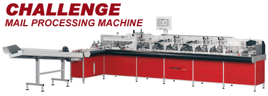

|
|
The new servo driven Cayenne High Speed Inserter is the most sophisticated in the range of all the Grützmacher Envelope Inserting systems.
Based on the proven Challenge series, the heavy duty Cayenne Inserter system offers even more possibilities to it customers. The new controlling concept with servo technology gives even greater
flexibility. Intelligent error handling allows the machine to make decisions which would then enable throughputs to be maintained at the highest possible level. The extensive range of feeder types
means, the Cayenne is ideally suited to a wide range of applications which also include Direct Mail and Transactional Mail.
With a cycle speed of up to 16.000 items per hour and envelope sizes from DIN C6 to DIN C4 the Cayenne is a world leader displaying world class engineering.
|
|

|
The Challenge High Speed Inserting System's range represents the foundation for all the Grützmacher Envelope Inserting Systems. With its ease of operation, flexibility and durability, the Challenge has been in use for many years by a variety of business types world-wide.
The Challenge is a continuously running heavy duty inserter machine which provides a smooth high-speed throughput for the inserts and envelopes. The extensive range of feeder types and vision systems helps make the Challenge meets all the demands of its customers. The choices and possibilities of configuration make this a truly flexible system. With a machine cycle speed of up to 15.000 items per hour and envelope sizes from DIN 6 to DIN C4 the Challenge is one of the most flexible envelope inserting systems in the world. Customers applications also include Direct and Transactional Mail
|
|
|
he Rubin High Speed inserter meets the demands of many applications because of its versatility and flexibility.
The Rubin High speed inserter is a continuously running heavy duty machine which provides a smooth high-speed throughput for the inserts and envelopes. As with all Grützmacher Envelope Inserting Systems the Rubin has many configuration possibilities to suit a wide variety of customer applications which also include Direct Mail and Transaction mail. With a machine cycle speed of up to 7.500 items per hour and envelope sizes from DIN C6 to DIN C4 the Rubin Inserter is ideally suited for many business types that require a precise, flexible and reliable system at a low cost of ownership.
|
|
|
The Easi High Speed Inserter range meets the demands of many applications because of it's versatility and flexibility.
The Easi High Speed Inserter is a continuously running heavy duty machine which provides a smooth high-speed face-up throughput for the inserts and envelopes.
As with all Grutzmacher Envelope Inserter Systems the Easi has many configuration possibilities to suit a wide variety of customer applications.
With a machine cycle speed of up to 4,500 items per hour envelope sizes from DIN C6 to DIN C4 the Easi is ideally suited for many business types that require a precise, flexible and reliable system at a low cost of ownership.
|